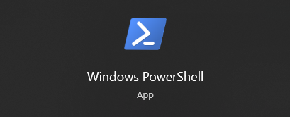
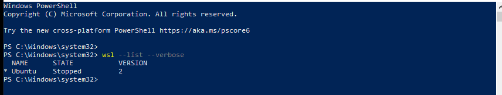

Installation and setup on Window

Requiments
*You must be running Windows 10 version 2004 and higher (Build 19041 and higher) or Windows 11
Setting it up WSL
- Run Windows PowerShell in Administrator 
- WSL is the Windows Subsystem for Linux and it will allow us to run command line commands in Windows.
- Copy and paste code below into PowerShell and hit the enter key to run it. Copy Text
- Restart PC once completed
- Upon restart you will be prompted to setup an ubuntu username and password
and then you will have successfully installed WSL. Make sure to keep username and passord safe somewhere. - Confirm you have everything set up properly Copy Text
- If all went well you should see this(make sure you are on version 2!)
wsl --install
wsl --list --verbose
